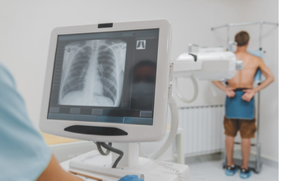

Who is most at risk of developing SCLC?
- SCLC mostly occurs in individuals in their early to late 60s and is linked to cigarette smoking, with the majority of patients having a history of tobacco use (Dumoulin et al., 2023; Wang et al., 2023).
- SCLC represents about 14% of all lung cancer cases.
- Individuals of African ancestry are at lower risk of developing SCLC compared to those of European ancestry.
Why is a chest X-ray the most common procedure for diagnosing or suspecting SCLC?
A patient with or suspected of having SCLC would normally undergo a chest X-ray (CXR) before other imaging modalities are considered.
The reason CXR is commonly used is due to:
- Their low cost
- Easy accessibility
- Minimal radiation exposure, with a single CXR involving a dose of approximately 0.02 mSv (Bradley et al., 2019; Public Health England, 2008).
- While the radiation dose from a single CXR is minimal, repeated X-rays over time can add up.
- This is especially important for SCLC patients, who often require frequent imaging, such as PET (discussed later on), to track the progression of the disease and the effectiveness of treatment.
- Thus, the combined exposure over time can increase the risk of long-term side effects, such as a slightly higher chance of developing other cancers later in life.
- However, this risk is generally small compared to the immediate benefits of accurately diagnosing and treating SCLC.

Image Source: Laguna Beach Urgent Care, 2025
What are some benefits and drawbacks of using chest X-rays for diagnosing SCLC?
- Any X-ray view required in radiography is painless, quick, and non-invasive, typically taking only a few minutes to complete.
- There are no immediate side effects from the radiation used in a single CXR.
- An advantage of using CXR to diagnose SCLC is that a resulting radiograph can reveal large masses, fluid buildup, or other abnormalities in the lungs that may indicate SCLC.
- However, some studies have indicated that CXR is less effective at detecting small tumours or early-stage SCLC (Bradley et al., 2019).
- This can lead to delayed diagnosis, which is concerning given the aggressive nature of SCLC.
- CXRs provide limited information about whether the cancer has spread (metastasized) to other parts of the body.
- Advanced imaging like CT or PET scans are required for staging.
- Studies demonstrated that approximately 90% of missed lung cancer cases occur on CXR.
- This is often attributed to factors such as misinterpretation of pathological findings as normal, the size and location of tumours, and variations in the skill level of those interpreting the radiograph (Del Ciello et al., 2017).
- CXRs sometimes produce false positives, such as mistaking benign conditions for cancer, or false negatives, such as failing to detect small tumours. This can lead to unnecessary follow-up tests or overlooked diagnoses.
References
- Del Ciello, A., Franchi, P., Contegiacomo, A., Cicchetti, G., Bonomo, L., & Larici, A. R. (2017). Missed lung cancer: When, where, and why? Diagnostic and Interventional Radiology (Ankara, Turkey), 23(2), 118–126. https://doi.org/10.5152/dir.2016.16187
- Bradley, S. H., Abraham, S., Callister, M. E., Grice, A., Hamilton, W. T., Lopez, R. R., Shinkins, B., & Neal, R. D. (2019). Sensitivity of chest X-ray for detecting lung cancer in people presenting with symptoms: A systematic review. British Journal of General Practice, 69(689), e827–e835. https://doi.org/10.3399/bjgp19X706853
- Dumoulin, D. W., Aarts, M. J., De Ruysscher, D., Aerts, J. G. J. V., & Dingemans, A.-M. C. (2023). Trends in the epidemiology of small-cell lung cancer: A Dutch nationwide population-based study over 1989–2020. European Journal of Cancer, 191, 112985. https://doi.org/10.1016/j.ejca.2023.112985
- Laguna Beach Urgent Care. (2025). Chest x-rays uncovered: What they show, how long they take, and more. [Photograph]. https://lagunabeachuc.com/inside-chest-x-rays/
- Public Health England. (2008, September 4). Patient dose information: guidance. GOV.UK. https://www.gov.uk/government/publications/medical-radiation-patient-doses/patient-dose-information-guidance
- Wang, Q., Gümüş, Z. H., Colarossi, C., Memeo, L., Wang, X., Kong, C. Y., & Boffetta, P. (2023). SCLC: Epidemiology, risk factors, genetic susceptibility, molecular pathology, screening, and early detection. Journal of Thoracic Oncology, 18(1), 31–46. https://doi.org/10.1016/j.jtho.2022.10.002